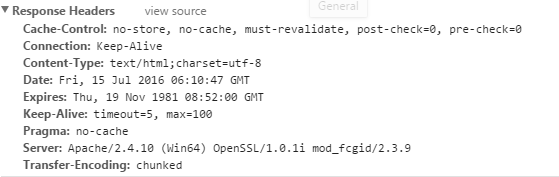

一般而言，通过隐藏的手段提高安全性被认为是作用不大的做法。但某些情况下，尽可能增加一份安全性都是值得去做的。
一些简单的方法可以帮助隐藏PHP，这样做可以提供攻击者发现系统弱点的难度。在php.ini文件里设置
expose_php = off可以减少他们获得有用信息的几率。
expose_php = On 的时候可以看到php的版本：

expose_php = Off后，看不到php的版本

另外一个策略就是让web服务器用PHP解析不同扩展名。无论是通过.htaccess文件还是 Apache的配置文件，都可以设置能误导攻击者的文件扩展名：
例子：把PHP隐藏为另外一种语言
AddType application/x-httpd-php .asp .py .pl
还可以设置httpd.conf来隐藏apache信息
ServerTokens Prod ServerSignature Off这样设置后在响应头也是看不了apache的相关信息了。